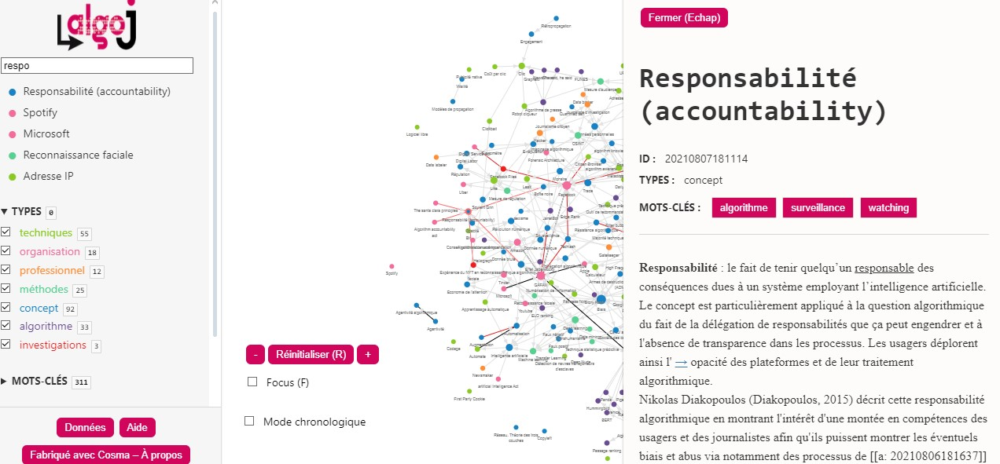

Bienvenue dans ce Vademecum destiné à l'organisation d'un hackathon axé sur les algorithmes. Inspiré par la journée d'étude organisée par l'IJBA et le MICA, qui s'est concentrée sur "Les journalistes au défi des algorithmes", ce guide vise à explorer la place croissante des algorithmes numériques dans divers domaines professionnels. En particulier, il s'attache à comprendre comment ces algorithmes façonnent notre monde, de la pratique journalistique à d'autres industries.
Premier Hackathon Consacré à l’Enquête Journalistique sur les Algorithmes
- Date : 30 novembre
- Participants : 70 étudiant.e.s en journalisme, InfoCom, et informatique de l’IJBA, de l’IUT Bordeaux Montaigne et de l’Université de Bordeaux.
- Lieu : IJBA
- Partenaires : Datactivist, Sud Ouest, Inria, Université de Bordeaux, CLEMI.
Objectif
Collaboration, créativité et débrouillardise seront à l’honneur pour élaborer des stratégies d’enquêtes journalistiques sur des modèles algorithmiques utilisés par les administrations publiques ou les entreprises privées.
Déroulement
- Formation des Équipes : Réparti.e.s en huit groupes, les futur.e.s journalistes, informaticien.ne.s et spécialistes de la documentation numérique.
- Mission : Concevoir des méthodes d’exploration d’un ensemble d’algorithmes.
- Encadrement : Aide d’une équipe d’encadrement multidisciplinaire.
Contexte
A l’heure où les algorithmes envahissent tous les secteurs, il est crucial pour les professionnel.le.s de l’information, les scientifiques et les citoyen.ne.s de comprendre leur fonctionnement et leur impact.
Cibles des Enquêtes
- Algorithmes d’aide à la décision, de détection des fraudes, d’attribution de prestations sociales.
- Algorithmes de recommandations d’achats, de classement des pages web, de distribution de l’information.
- Utilisés par la CAF, l’administration fiscale, ParcoursSup, Trouve mon Master, SNCF, Amazon, Netflix, Google, Facebook, X, ChatGPT, Midjourney, etc.
Questions Clés
- Conformité à la loi, contrôle, production de biais, tromperie des consommateurs, propagation de fausses informations.
Format de la Compétition
- Matin : Formation des équipes et choix de l’algorithme.
Ressources utiles
Vidéos
- Intervention d'Estelle Harry à Datarama
Estelle Harry à Datarama - Comment auditer des algorithmes d'IA, par Benoit Rottembourg
Auditer des algorithmes d'IA
Articles et Publications
- Ouvrir le code des algorithmes ne suffit plus
AOC Media - Ouvrir le code des algorithmes - Rapport Bothorel
Rapport Bothorel
Podcasts et Initiatives
- Podcast du MIT "In Machine We Trust"
In Machine We Trust - Algorithm Watch et le jeu Break the Algorithm
Algorithm Watch | Break the Algorithm Game
Organisations et Guides
- Travaux de Datactivist
Datactivist SPoSGL - Guide Etalab sur les algorithmes publics
Guide Etalab - Guide de Datapublica
Guide Datapublica - European Centre for Algorithmic Transparency
Site du projet | description par Algorithm Watch - Le Centre européen pour la transparence algorithmique (ECAT) a été officiellement inauguré à Séville, en Espagne, le 18 avril 2023. Ce centre joue un rôle majeur dans l'examen des algorithmes des principaux services numériques tels que Facebook, Instagram et TikTok...
- le graphe AlgoJ (lexique consultable sous forme de graphe réalisé avec le logiciel Cosma)
Graphe 
Livrable 1 : Rapport d'Enquête sur l'Algorithme
Quoi : Description et Contexte
- Description des Algorithmes :
- Typologie, fonctionnalités, et traitement effectué par l'algorithme.
- Références scientifiques ou journalistiques liées à l'algorithme.
- Contexte :
- Contexte économique, technique, et éthique entourant l'usage de l'algorithme.
Pourquoi : Objectif de l'Enquête
- Hypothèse Principale :
- Clarification de ce que l'enquête cherche à démontrer (biais, dysfonctionnements, dark patterns, etc.).
- Intérêt pour le Lectorat :
- Justification de l'intérêt et de la pertinence de l'enquête pour un public ciblé.
Comment : Méthodologie et Résultats
- Méthodologie d'Audit :
- Approche détaillée pour l'audit de l'algorithme.
- Premiers éléments de preuve appuyant l'hypothèse d'enquête.
- Résultats Préliminaires :
- Présentation de résultats tangibles démontrant l'intérêt de l'enquête.
- Démos et données de démonstration si disponibles.
Poursuite de l'Enquête et Limites
- Pistes de Suite :
- Potentialités de rétroingénierie et stratégies d'enquête complémentaires envisagées.
- Processus de Documentation :
- Description du processus de documentation de l'enquête.
Annexes
- Documentation des Actions :
- Récapitulatif des actions réalisées durant la journée du hackathon.
- Données et Outils :
- Ensemble de données obtenues et prototypes/scripts développés.
Livrable 2. Présentation Synthétique en 5 minutes.
- Contenu : Présentation visuelle (PowerPoint ou équivalente)
- Objectif : Résumer l'approche de l'équipe, la méthodologie, les résultats préliminaires et les pistes complémentaires envisagées.
- Intervention d'Estelle Harry à Datarama